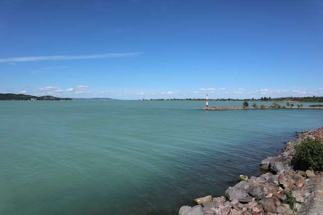
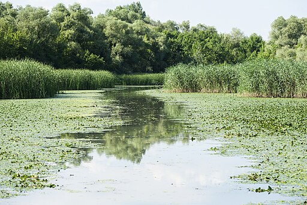

Balaton
A Balaton Magyarország legnagyobb tava és a legnépszerűbb üdülőhely. Sekély vize miatt gyorsan felmelegszik, ezért ideális családok számára. Az északi part hegyesebb és borvidékeiről ismert. A déli part homokosabb és sekélyebb. Nyáron számos fesztivál és rendezvény várja a látogatókat. Kiváló kerékpáros útvonalak találhatók a tó körül. A naplemente különleges látványt nyújt. A Balaton egész évben vonzza a turistákat.
Tisza-tó
A Tisza-tó Magyarország második legnagyobb tava. Gazdag élővilága miatt a természetkedvelők kedvence. Kiváló horgászati lehetőségeket biztosít. Számos tanösvény található a környéken. Ideális vízi sportokhoz. Csendesebb alternatíva a Balatonhoz képest. A madárvilág rendkívül változatos. Tökéletes családi kirándulóhely.
Szelidi-tó

A Szelidi-tó természetes eredetű tó. Nyugodt környezetet biztosít a pihenéshez. Vize nyáron kellemes hőmérsékletű. A strand rendezett és tiszta. Kempingezésre is van lehetőség. Gyógyhatású ásványi anyagokat tartalmaz. Ideális kikapcsolódásra. A nyugalmat keresők kedvelt úti célja.